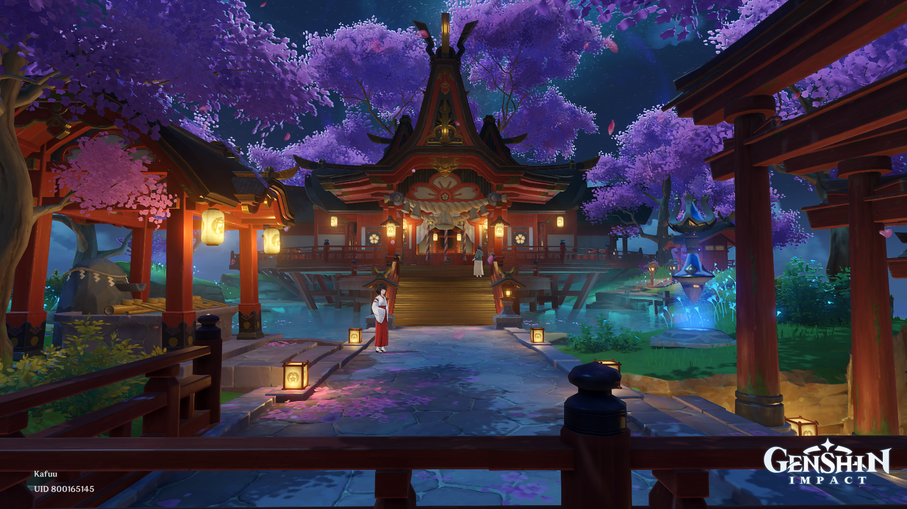

Inazuma Scenery Genshin Impact

Grand Narukami Shrine
Inazuma is a beautiful region in the game Genshin Impact, known for its stunning landscapes and rich culture. The scenery includes lush forests, serene beaches, and majestic mountains, all contributing to an immersive gaming experience.
Players can explore various locations within Inazuma, specifically this majestic shrine.